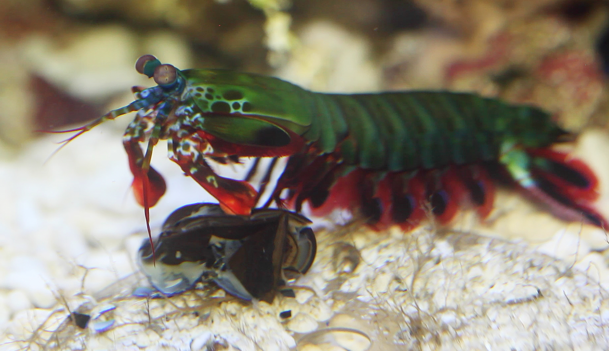

Facts about Stomatopoda
General information
Scientific name: Odontodactylus scyllarus
| Reign | Animalia |
| Phylum | Crustacea |
| Class | Malancostraca |
| Subclass | Hoplocarida |
| Order | Stomatopoda |
| Family | Odontodactylidae |
| Genus | Odontodactylus |
| Specie | O. scyllarus |
| Binomial Name | Odontodactylus scyllarus (Linnaeus, 1758) |
Where and how it lives
The Stomatopoda lives in swarm, shallow water, and tycally grows to be between 6-12 inches in length. Mantis shrimps, or stomatopods, are carnivorous marine crustaceans of the order Stomatopoda, branching from other members of the class Malacostraca around 340 million years ago. [2] Mantis shrimps typically grow to around 10 cm (3.9 in) in length, while a few can reach up to 38 cm (15 in). [3] The largest mantis shrimp ever caught had a length of 46 cm (18 in); it was caught in the Indian River near Fort Pierce, Florida, in the United States.[4] A mantis shrimp's carapace (the bony, thick shell that covers crustaceans and some other species) covers only the rear part of the head and the first four segments of the thorax. Varieties range in color from shades of brown to vivid colors, with more than 450 species of mantis shrimps being known. They are among the most important predators in many shallow, tropical and subtropical marine habitats. However, despite being common, they are poorly understood, as many species spend most of their lives tucked away in burrows and holes. Called "sea locusts" by ancient Assyrians, "prawn killers" in Australia,[6] and now sometimes referred to as "thumb splitters" — because of the animal's ability to inflict painful wounds if handled incautiously[7] — mantis shrimps have powerful raptorials that are used to attack and kill prey either by spearing, stunning, or dismembering. Some mantis shrimp species have specialised calcified "clubs" that can strike with great power, while others have sharp forelimbs used to seize the prey (hence the term "mantis" in its common name).

Its beautyfull e diversified way to see the world
It has SIXTEEN color-receptive cones. The rainbow we see stems from just THREE colors. The eyes of the mantis shrimp are mounted on mobile stalks and can move independently of each other. They are thought to have the most complex eyes in the animal kingdom and have the most complex visual system ever discovered. Compared to the three types of photoreceptor cells that humans possess in their eyes, the eyes of a mantis shrimp have between 12 and 16 types of photoreceptor cells. Furthermore, some of these shrimp can tune the sensitivity of their long-wavelength colour vision to adapt to their environment.[16] This phenomenon, called "spectral tuning", is species-specific.[17] Cheroske et al. did not observe spectral tuning in Neogonodactylus oerstedii, the species with the most monotonous natural photic environment. In N. bredini, a species with a variety of habitats ranging from a depth of 5 to 10 m (although it can be found down to 20 m below the surface), spectral tuning was observed, but the ability to alter wavelengths of maximum absorbance was not as pronounced as in N. wennerae, a species with much higher ecological/photic habitat diversity. The diversity of spectral tuning in Stomatopoda is also hypothesized to be directly linked to mutations on the opsin gene's chromophore binding pocket.[18] Despite the impressive range of wavelengths that mantis shrimp have the ability to see, they do not have the ability to discriminate wavelengths less than 25 nm apart. It is suggested that not discriminating between closely positioned wavelengths allows these organisms to make determinations of its surroundings with little processing delay. Having little delay in evaluating surroundings is important for Mantis shrimp since they are territorial and frequently in combat. Each compound eye is made up of tens of thousands of ommatidia, clusters of photoreceptor cells.[14] Each eye consists of two flattened hemispheres separated by parallel rows of specialised ommatidia, collectively called the midband. The number of omatidial rows in the midband ranges from two to six.[13][14] This divides the eye into three regions. This configuration enables mantis shrimp to see objects with three parts of the same eye. In other words, each eye possesses trinocular vision and therefore depth perception. The upper and lower hemispheres are used primarily for recognition of form and motion, like the eyes of many other crustaceans. Mantis shrimp can perceive wavelengths of light ranging from deep ultraviolet (UVB) to far-red (300 to 720 nm) and polarized light.[14][19] In mantis shrimp in the superfamilies Gonodactyloidea, Lysiosquilloidea, and Hemisquilloidea, the midband is made up of six omatodial rows. Rows 1 to 4 process colours, while rows 5 and 6 detect circularly or linearly polarized light. Twelve types of photoreceptor cells are in rows 1 to 4, four of which detect ultraviolet light. Rows 1 to 4 of the midband are specialised for colour vision, from deep ultraviolet to far red. Their UV vision can detect five different frequency bands in the deep ultraviolet. To do this, they use two photoreceptors in combination with four different colour filters.[21][22] They are not currently believed to be sensitive to infrared light.[23] The optical elements in these rows have eight different classes of visual pigments and the rhabdom (area of eye that absorbs light from a single direction) is divided into three different pigmented layers (tiers), each for different wavelengths. The three tiers in rows 2 and 3 are separated by colour filters (intrarhabdomal filters) that can be divided into four distinct classes, two classes in each row. It is organised like a sandwich - a tier, a colour filter of one class, a tier again, a colour filter of another class, and then a last tier. These colour filters allow the mantis shrimp to see with diverse colour vision. Without the filters, the pigments themselves range only a small segment of the visual spectrum, about 490 to 550 nm.[24] Rows 5 and 6 are also segregated into different tiers, but have only one class of visual pigment, the ninth class, and are specialised for polarization vision. Depending upon the species, they can detect circularly polarized light, linearly polarised light, or both. A tenth class of visual pigment is found in the upper and lower hemispheres of the eye. Some species have at least 16 photoreceptor types, which are divided into four classes (their spectral sensitivity is further tuned by colour filters in the retinas), 12 for colour analysis in the different wavelengths (including six which are sensitive to ultraviolet light[21][25]) and four for analysing polarised light. By comparison, most humans have only four visual pigments, of which three are dedicated to see colour, and human lenses block ultraviolet light. The visual information leaving the retina seems to be processed into numerous parallel data streams leading into the brain, greatly reducing the analytical requirements at higher levels.[26] Six species of mantis shrimp have been reported to be able to detect circularly polarized light, which has not been documented in any other animal, and whether it is present across all species is unknown.[27][28][29] Some of their biological quarter-waveplates perform more uniformly over the visual spectrum than any current man-made polarising optics, and this could inspire new types of optical media that would outperform the current generation of Blu-ray Disc technology. The species Gonodactylus smithii is the only organism known to simultaneously detect the four linear and two circular polarisation components required to measure all four Stokes parameters, which yield a full description of polarisation. It is thus believed to have optimal polarisation vision.[28][32] It is the only animal known to have dynamic polarisation vision. This is achieved by rotational eye movements to maximise the polarisation contrast between the object in focus and its background.[33] Since each eye moves independently from the other, it creates two separate streams of visual information.[34] The midband covers only about 5 to 10° of the visual field at any given instant, but like most crustaceans, mantis shrimps' eyes are mounted on stalks. In mantis shrimps, the movement of the stalked eye is unusually free, and can be driven up to 70° in all possible axes of movement by eight eyecup muscles divided into six functional groups. By using these muscles to scan the surroundings with the midband, they can add information about forms, shapes, and landscape, which cannot be detected by the upper and lower hemispheres of the eyes. They can also track moving objects using large, rapid eye movements where the two eyes move independently. By combining different techniques, including movements in the same direction, the midband can cover a very wide range of the visual field. The huge diversity seen in mantis shrimp photoreceptors likely comes from ancient gene duplication events.[24][35] One interesting consequence of this duplication is the lack of correlation between opsin transcript number and physiologically expressed photoreceptors.[24] One species may have six different opsin genes, but only express one spectrally distinct photoreceptor. Over the years, some mantis shrimp species have lost the ancestral phenotype, although some still maintain 16 distinct photoreceptors and four light filters. Species that live in a variety of photic environments have high selective pressure for photoreceptor diversity, and maintain ancestral phenotypes better than species that live in murky waters or are primarily nocturnal.[24][36]

Its raptorial appendages
It has two raptorial appendages on the front of its body. This accelerate with the same velocity as a gunshot from a twenty-two caliber rifle and in less than three-thousandths of a second can strike prey with 1,500 Newtons of force.

How it captures its preys
Their limbs move so quickly the water around them boils in a process known as supercavitation. When these cavitation bubbles collapse it produces an undersea shockwave that can kill prey even if the Stomatopoda misses its target.
It kills its prey primarily by dismemberment, using these "murder sticks".
See Stomatopoda in action!
Click this link to see Stomatopoda in action.